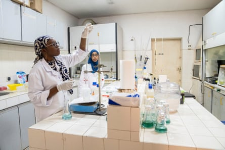

S pain swims against the tide. At a time when much of Europe is grappling with economic crises, caving in to populist anti-aid narratives and slashing development budgets, the country is increasing its financial support for the global south. Instead of planning future aid cuts, Spain has put ambitious goals for 2030 into law.
Moreover, at a time when much of the world is looking inward and retreating from multilateralism, Spain will host a UN summit in Seville this month, the first of its kind in the global north. Dozens of heads of government, state and multilateral organisations will discuss how to finance development in a post-aid world, suffocated by military spending and unpayable debt in dozens of countries, particularly those in Africa. For the Spanish government, the forthcoming Seville summit is a clear political statement.
By promoting multilateralism and international cooperation – while increasing development aid – Spain has become an outlier in the new world disorder. After all, the Trump administration is not alone in slashing development aid. The UK, France and Germany, among others, have jumped on the aid-cutting bandwagon. According to OECD figures, official development assistance dropped by 7.1% globally in 2024, with the European Union cutting aid by 8.6% . And the OECD warns that this marks just the beginning of a broader downward trend; projections suggest that 2025 could see the largest aid cut in history.
In sharp contrast, Spain increased its foreign aid by 12%, according to the foreign ministry last year, and has committed to reaching the longstanding target of allocating 0.7% of its gross domestic product by 2030 .
It is worth noting that, despite these pledges, Spain is not at present particularly generous. Development aid accounts for just 0.25% of GDP, which is less than the 0.33% OECD average. This means not only that Spain has a long way to go to meet the 0.7% commitment, but also that the government’s pro-aid rhetoric is only partly backed up by euros and dollars. Moreover, part of that aid – as in other donor countries – is dedicated to hosting refugees in Spain. At a time when international solidarity is crumbling, however, Spain’s political commitment and vocal support for aid matters all the same.
So how did we get here, and what makes Spain (alongside a few other countries such as Portugal or Italy) the Asterix’s Gaulish village of aid? And more importantly, are there lessons here for other countries?
International cooperation has traditionally been a matter of national consensus in Spain. Solidarity with those beyond its borders is woven into the country’s identity – rooted, perhaps, in its own historical memory of underdevelopment. Like Ireland and South Korea – countries also defending aid – Spain became rich after having been poor. Spain’s post-civil war suffering and relative poverty until recent decades make it easier for Spaniards to empathise with hardship abroad.
The country’s own development, too, was aided by external support. More recently, European cohesion funds, in particular, played a crucial role. Spain continues to look to Europe with a sense of gratitude and trust. During the Franco dictatorship, Europe was seen as both a lifeline and a beacon of freedoms. Isolationism is not part of the national sentiment.
Technicians test samples for pesticides, heavy metals, PCBs and other pollutants at Senegal’s Ceres Locustox lab in Dakar, which receives support from Spain.Photograph: Marta Moreiras/AECID
Support for aid has traditionally united parties across the political spectrum, from the left and the right to the regional independents. The new Cooperation Law, passed in 2023 , received backing from every party in parliament – except the far-right Vox. Beyond institutional politics, foreign aid also enjoys strong support among the Spanish public. Last year, Spain was the world’s largest private donor to the UN’s refugee agency, UNHCR, in absolute terms, which is remarkable for a medium-sized country.
Another reason for this enduring support lies in the influence of Spain’s traditional, often Catholic, conservative base. Many of these communities have long defended solidarity and social justice as core Christian principles. And while the far right is growing in Spain, its influence remains limited compared with Reform UK, France’s National Rally (RN, formerly the National Front), or Germany’s Alternative für Deutschland (AfD). On aid policy specifically, Vox has so far failed to drag Spain’s traditional conservative People’s party further to the right.
There is a more pragmatic factor that should not be underestimated. While the economies of major donor countries are struggling, Spain continues to grow. While the European Commission forecasts just 0.9% growth for the eurozone , Spain is expected to grow at a much healthier 2.6%.
These figures matter – but don’t tell the whole story. Beneath the surface lies growing inequality, the kind that has fuelled anger and driven millions of disaffected voters into the arms of populist protest parties in other countries. Yet Spain continues to champion development cooperation – alongside feminism, climate action, giving legal status to migrants and diversity policies – placing itself at odds with the culture war agenda.
With its progressive stand, Spain tries to position itself as a bridge between the global south and the north – a role in which it holds a degree of some credibility, particularly in light of its outspoken support for Palestinians in Gaza.
But there are signs pointing out that a shift might also happen in Spain. The traditional social cohesion, which united Spaniards despite party politics, is cracking at an alarming rate. Society is increasingly polarised and fragile.
So far, changes in government have not led to major shifts in international cooperation policy, but it would be unwise to underestimate the speed of change elsewhere. In regions where Vox holds or held power along with the traditional right, such as Aragón and Valencia, demands for budget cuts have emerged.
On social media, political rivals shout at each other and shamelessly manufacture fake news. We saw it during the recent floods in Valencia, where the traditional right spread xenophobic messages alleging the government cared more about victims in Gaza than those closer to home.
Meanwhile, political instability in Spain is growing ever more evident in the aftermath of corruption scandals involving the ruling Socialist party. If there were to be early elections, a new approach to aid could gain traction. Those who believe Spanish social solidarity is too deeply rooted to turn back should perhaps look at the US, Trump’s arrival and the dismantling of USAID .
Ana Carbajosa is editor-in-chief of Planeta Futuro , the development section of El País